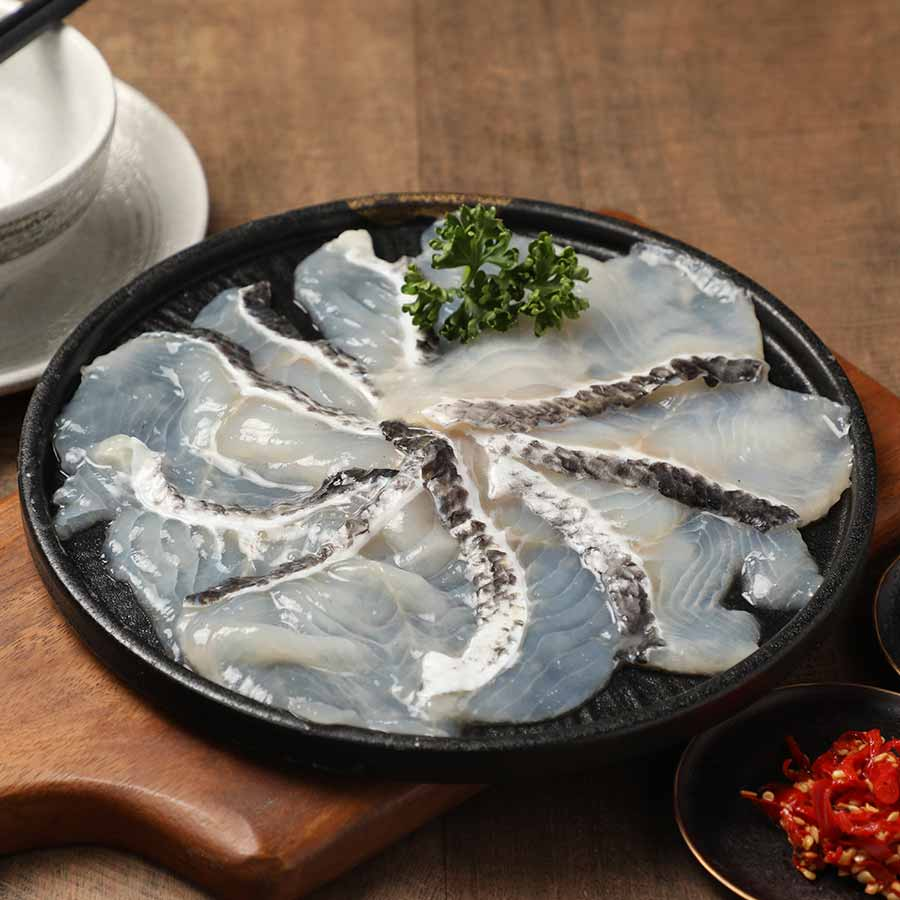
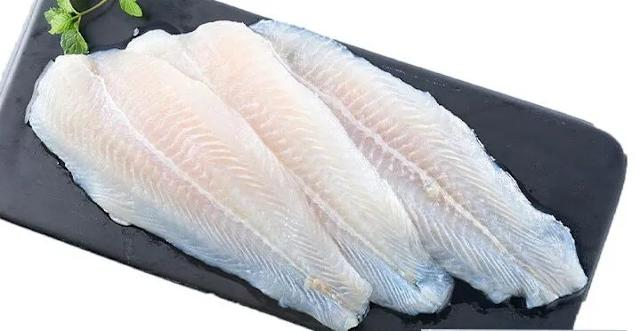
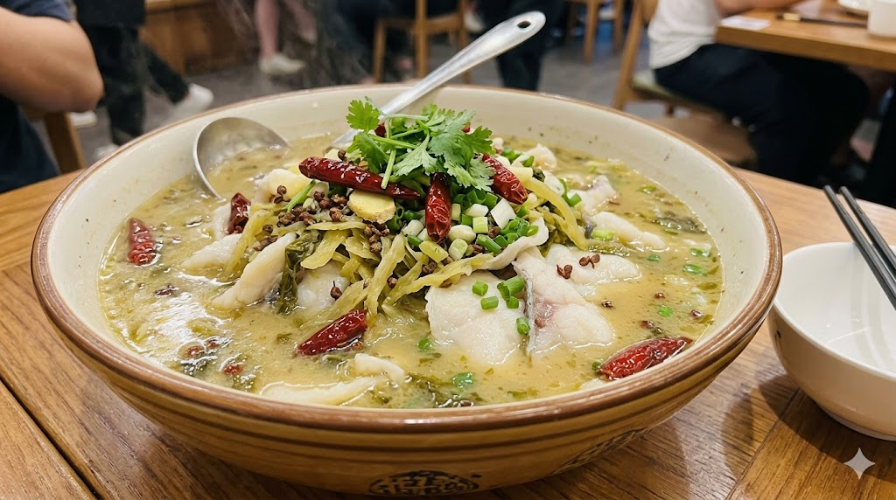

關於本站
歡迎光臨本站。
這裡是介紹酸菜魚料理中，常見的魚肉種類。
※未經許可，請勿擅自複製轉載。
酸菜魚使用的魚肉
●烏鱧魚

刁民酸菜魚使用的魚片，也是台灣酸菜魚最常使用的魚種。
價格較高，大多為中國進口，肉質緊實且有彈性。
●巴沙魚

較為平價，常見於便當店、吃到飽餐廳，肉質非常軟嫩。
是一種鯰魚。
廚師介紹

- 暱稱 ：
- Wang
- 職業 ：
- 廚師
- mail ：
- 123@gamil.com Web ：
- 酸菜魚 - 維基百科